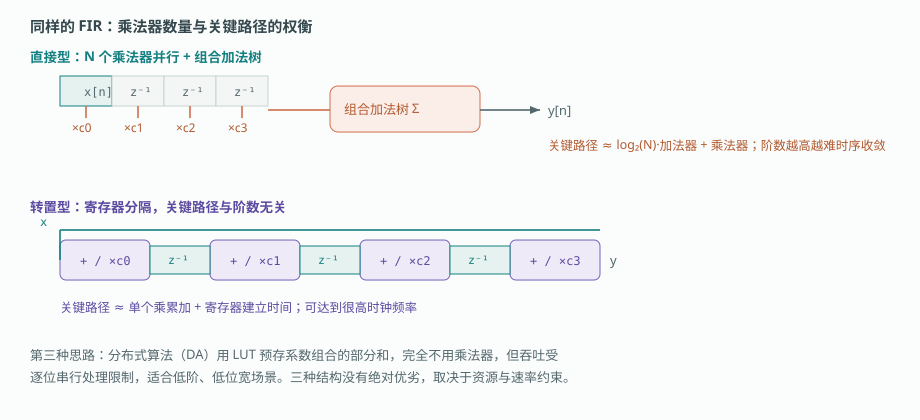
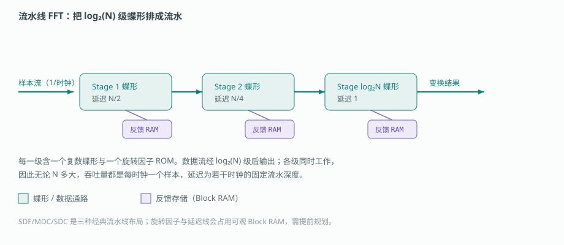

Implementation · FPGA / 22
FPGA 上的 DSP：并行、流水线与 CORDIC
DSP 芯片每个周期能做的乘加是固定的；FPGA 让你“用逻辑资源换并行度”，代价是设计复杂度与确定性要求。
顺序执行与空间并行
DSP 芯片本质上仍是顺序执行指令：无论硬件 MAC 多快、流水线多深，每个周期能完成的乘加次数是固定的。当算法需要的吞吐量超过这个上限时，只能增加芯片数量，或换一种计算模型。
FPGA 提供的是另一种模型：空间并行。需要同时做 8 个 MAC，就在逻辑里放 8 个乘法器；需要每周期吞吐一个样本，就把运算排成流水线。它用硬件资源换计算速度：没有指令取指，也没有分支预测失败。
代价同样明确：设计要落到每一个时钟周期与每一个比特；资源、时序与延迟都需自行规划。可检验的目标：本章程序用纯移位-加法实现 CORDIC 逼近三角函数，并证明分布式算法 FIR 与直接型逐点相等。
DSP Slice：硬化的乘法器块
现代 FPGA 并非只有通用逻辑单元（LUT + 触发器），还集成了硬化的 DSP Slice——一个可配置的乘加块。用它做乘法，比用 LUT 拼出乘法器更省资源、时序更好。
| 厂商 | 名称 | 核心结构 | 可配置位宽 |
|---|---|---|---|
| AMD (Xilinx) | DSP48E2 | 乘法器 + 累加器 + ALU + 预加器 | 支持宽乘法与拆分使用 |
| Intel (Altera) | Variable Precision DSP Block | 乘法器 + 高宽累加 + 链式输入 | 可在几种精度间配置 |
| Lattice | DSP Block | 小位宽乘法器 + 累加器 | 面向低功耗与视频桥接 |
具体器件内 DSP Slice 的数量与位宽由型号决定，需查对应数据手册，不能用“多”或“少”一概而论。但几种通用能力值得记住：
- 级联（Cascade）：多个 Slice 可串接，拼出比单个乘法器更宽的乘法，或做长累加链。
- 拆分使用：一个宽乘法器可拆成几个低位宽乘法器并行，用于低精度高通量场景。
- 预加器（Pre-adder）：乘法之前先做加法；对称 FIR 可借此省下一半乘法器。
FIR 的三种 FPGA 实现
同一个 FIR，在 FPGA 上有多种结构，资源与延迟特性不同。先从定义出发：
式（1）：N 为抽头数。直接型与转置型都用 N 个乘法器，区别在于加法器与寄存器的摆放方式。
直接型：每个抽头一个乘法器，乘积汇入加法树。资源是 O(N) 个乘法器，关键路径随阶数增长，高阶时难以时序收敛。
转置型：寄存器夹在加法器之间，关键路径与阶数无关，只受单个乘累加限制；这是高吞吐 FIR 的标准做法。
分布式算法（DA）：把乘法改写为查表。把输入 x[n−k] 的每一位拆开，用 LUT 预存所有系数组合的部分和，再逐位加权累加：
式（2）：L(b) 是以第 b 位组成的位向量为索引、预存系数组合的查找表输出。DA 不用乘法器，但吞吐受逐位串行处理限制。

流水线 FFT
FPGA 上实现 FFT 几乎不会用“一次算一个蝶形”的迭代方法——那太慢。工业做法是流水线 FFT：把 log₂(N) 级蝶形排成流水线，每级处理完的数据立刻交给下一级。
| 架构 | 全称 | 特点 |
|---|---|---|
| SDF | Single-path Delay Feedback | 单数据通路，用反馈寄存器缓存一半数据，RAM 最省 |
| MDC | Multi-path Delay Commutator | 多数据通路并行，速率更高，RAM 与乘法器更多 |
| SDC | Single-path Delay Commutator | 单通路 + 切换器，资源居中 |

旋转因子（twiddle factor）存储常被低估：一个 N 点 FFT 需要约 N/2 个复数旋转因子，加上各级延迟线，可能占用可观的 Block RAM。资源规划时需提前把这些存储算进去。
CORDIC：移位加法算三角
FPGA 里乘法器可以硬化，但三角函数没有硬件原语。CORDIC（Coordinate Rotation Digital Computer）用迭代的移位与加法逼近旋转：每次把目标角度分解为一个可预计算的角度 arctan(2⁻ⁱ)，沿固定方向旋转一小步。
式（3）：s_i=±1 由当前残余角 z_i 的符号决定。收敛后 (x,y) 正比于 (cos θ, sin θ)，比例因子为常数 K，可在初值中预先补偿。
CORDIC 不只算三角函数。它还能实现：NCO（数字控制振荡器，替代大容量正弦 ROM）、直角坐标 ↔ 极坐标（数字下变频的鉴相）、以及幅度 √(I²+Q²)（vector 模式）。现代 FPGA 提供 CORDIC IP 核，一般直接调用即可，除非你特别关注延迟或需要定制迭代次数。
HLS 高层次综合
用 RTL 描述 DSP 很痛苦：每个周期、每个比特位宽、每个状态机都要手写。高层次综合（HLS）让你写 C/C++，工具生成 RTL。最终硬件性能取决于代码风格与 pragma，而不是自动变好。
| Pragma | 作用 | 代价 |
|---|---|---|
PIPELINE II=1 | 循环流水化，每周期启动一次新迭代 | 需要额外寄存器（寄存器重命名） |
UNROLL | 展开循环，所有迭代并行 | 资源乘 N 倍 |
ARRAY_PARTITION | 把数组拆成多块存储，消除读写冲突 | 存储块数量增加，吞吐提升 |
DATAFLOW | 函数级流水，不同阶段并行 | 需要 FIFO 缓冲 |
几条实用经验：循环要有固定边界（变量边界会使流水化失效）；避免动态内存分配（malloc 不可综合）；用 ap_fixed<W,I> 而非 float，后者综合出的面积极大；先用 C 仿真验证功能，再做 C/RTL 协同仿真验证精度，最后看 latency/area 报告迭代。
交互：CORDIC 迭代精度
下面用 CORDIC 算法（初值预先补偿增益 1/K）在 −π/2 到 π/2 上逼近 sin。滑块改变迭代次数：青线是真值，赭线是 CORDIC 输出。迭代越多误差越小，但每加一级就多一份流水线资源。
动手验证：选择 CORDIC 迭代次数
交互仅辅助观察；式（3）与确定性程序在 JS 关闭时仍可独立理解。
完整可执行例程（22_fpga.py）：断言 CORDIC 12 次迭代 sin 误差 < 1e-3、增益补偿后 cos(0)≈1、分布式算法 FIR 与直接型逐点相等、转置型与直接型等价。
FPGA 与 DSP 芯片的取舍
| 维度 | FPGA | DSP 芯片 |
|---|---|---|
| 并行度 | 可定制，几乎任意宽度 | 固定（取决于硬件 MAC 单元数） |
| 时钟频率 | 通常较低 | 通常较高 |
| 延迟 | 确定性，可做到 ns 级 | 取决于中断与调度 |
| 开发难度 | 高（RTL/HLS） | 中等（C） |
| 重新配置 | 重新编译/烧录 | 软件更新 |
| 典型场景 | 超高吞吐、极低确定性延迟 | 中等吞吐、算法灵活 |
表中不给出具体频率与 MAC 数：它们随型号大幅变化，应以所选器件的数据手册为准。一个可用的判断顺序是：先看吞吐与延迟的硬约束，再看开发周期与功耗，最后才比峰值指标。
边界与失效模式
- 流水线级数不匹配：级联 DSP 与流水线路径若级数不一致，数据与控制信号错位；复位后可能“碰巧”正确，掩盖问题。
- 资源估算遗漏：旋转因子 ROM、延迟线与 FIFO 都占 Block RAM；只数乘法器会大幅低估占用。
- DA 的吞吐限制：逐位串行使位数越多越慢；LUT 大小随抽头数指数增长，抽头多时必须分块。
- HLS 不是自动优化：变量循环边界、动态内存、
float类型都会使综合结果远差于预期。 - 关键路径与时钟：直接型高阶 FIR 的组合加法树会成为时序瓶颈，需改转置型或插入流水。
- 比特级验证不可省：FPGA 输出必须与浮点/定点参考逐位或逐点对齐，不能靠听感判断。
自检：一个 256 抽头的直接型 FIR 为何难时序收敛？改转置型或插入流水寄存器分别改变什么？DA 在高抽头数下为什么必须先分块？
参考资料与接口
- J. E. Volder (1959) · The CORDIC Trigonometric Computing Technique：移位-加法迭代算法的原始文献。
- AMD · UltraScale Architecture DSP Slice (UG579)：DSP48E2 的乘法器、累加器、预加器与级联。
- AMD · Vitis HLS (UG1399)：PIPELINE/UNROLL/ARRAY_PARTITION 等 pragma 的语义。
- MIT OCW · Discrete-Time Signal Processing：FIR/FFT 结构与定点实现的数学基础。